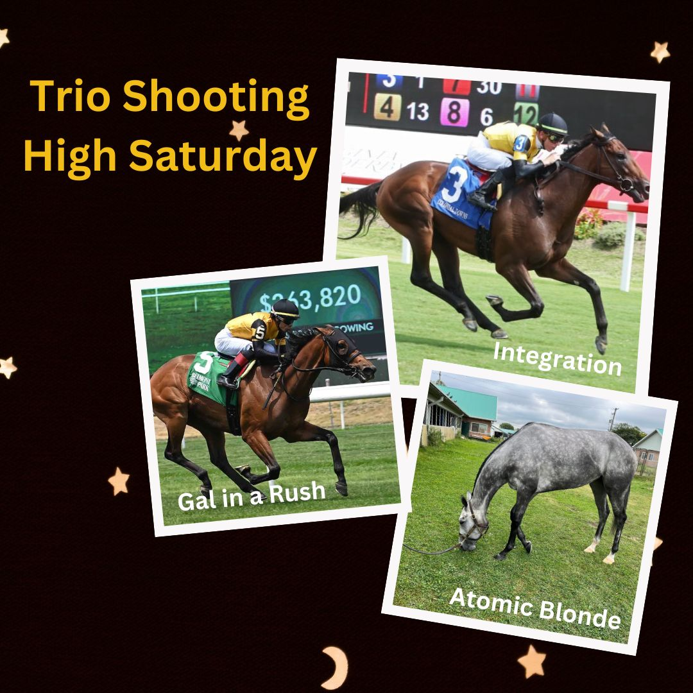

Atomic Blonde, madre del ganador del Preakness Stakes Napoleon Solo, comparte raíces con Justify
La yegua Atomic Blonde, madre de Napoleon Solo, vencedor del Preakness Stakes (GI) la pasada semana, y el Triple Coronado Justify comparten origen: ambos son hijos de Scat Daddy, fueron criados por la familia Gunther y se criaron en Glennwood Farm, Kentucky.

Foto: westpointtb.com
Atomic Blonde, la yegua que dio a luz a Napoleon Solo —ganador del Preakness Stakes (GI) disputado la semana pasada—, comparte un denominador común con Justify, el Triple Coronado de 2018. Ambos ejemplares son hijos del semental Scat Daddy, fueron criados por la familia Gunther y se criaron en Glennwood Farm, cerca de Versailles, en el estado de Kentucky. Esta coincidencia subraya la relevancia de una línea de sangre que ha producido campeones de primer nivel en el circuito estadounidense.
Napoleon Solo, hijo de Liam's Map, se impuso en la segunda joya de la Triple Corona norteamericana, consolidando el prestigio de su madre y de la yeguada que lo vio nacer. La conexión entre dos productos de semejante calado —uno Triple Coronado y otro vencedor de un clásico de Grupo I— pone de relieve la importancia del programa de cría de la familia Gunther y la labor de Glennwood Farm en el desarrollo de ejemplares de élite. Atomic Blonde, al igual que Justify, lleva el sello de Scat Daddy, un semental cuyo legado continúa marcando diferencias en las pistas de mayor exigencia.
— Redacción de Galope al Día